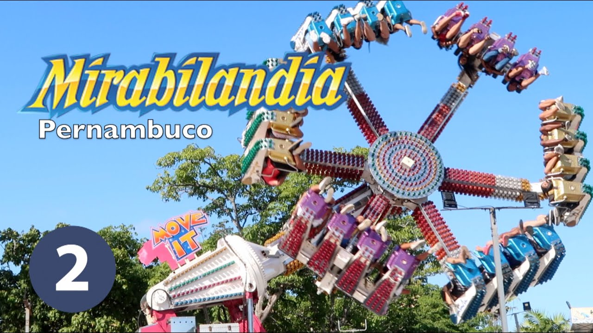
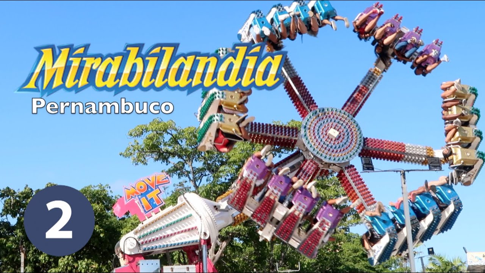

Disney
Porto de galinhas
Mirabilandia

 

Descubra o encanto da Disney! Desde 1923, a Disney tem sido sinônimo de magia e entretenimento. Com parques temáticos deslumbrantes, personagens queridos e uma ampla gama de filmes e programas de televisão amados em todo o mundo, a Disney cativa corações de todas as idades. Prepare-se para uma jornada emocionante pelos reinos mágicos da Disney, onde sonhos se tornam realidade e aventuras esperam por você. Junte-se a nós e embarque em uma experiência que você nunca esquecerá!
Bem-vindo ao mundo de diversão e emoção da Mirabilandia! Localizado na bela região da Emília-Romanha, na Itália, o parque de diversões Mirabilandia é um destino imperdível para quem busca aventura e entretenimento. Desde sua inauguração em 1992, o parque tem encantado visitantes de todas as idades com suas montanhas-russas emocionantes, shows espetaculares, áreas temáticas encantadoras e uma variedade de atrações emocionantes. Com uma atmosfera vibrante e uma variedade de atividades para toda a família, a Mirabilandia oferece momentos inesquecíveis de diversão e adrenalina. Prepare-se para uma experiência emocionante e única em um dos parques de diversões mais emocionantes da Itália - Mirabilandia!
Explore a beleza natural e a diversão sem limites em Porto de Galinhas! Localizado no encantador estado de Santa Catarina, no sul do Brasil, o Beto Carrero World é o maior parque temático da América Latina e um destino imperdível para os amantes de aventura e entretenimento. Fundado pelo visionário Beto Carrero em 1991, o parque oferece uma experiência emocionante com uma variedade de atrações, desde montanhas-russas eletrizantes até espetáculos emocionantes com artistas internacionais. Com uma atmosfera única e uma infinidade de atividades para todas as idades, o Beto Carrero World é o lugar perfeito para criar memórias inesquecíveis em família. Prepare-se para uma jornada cheia de diversão e emoção em um dos parques temáticos mais renomados e amados do Brasil - o Beto Carrero World!